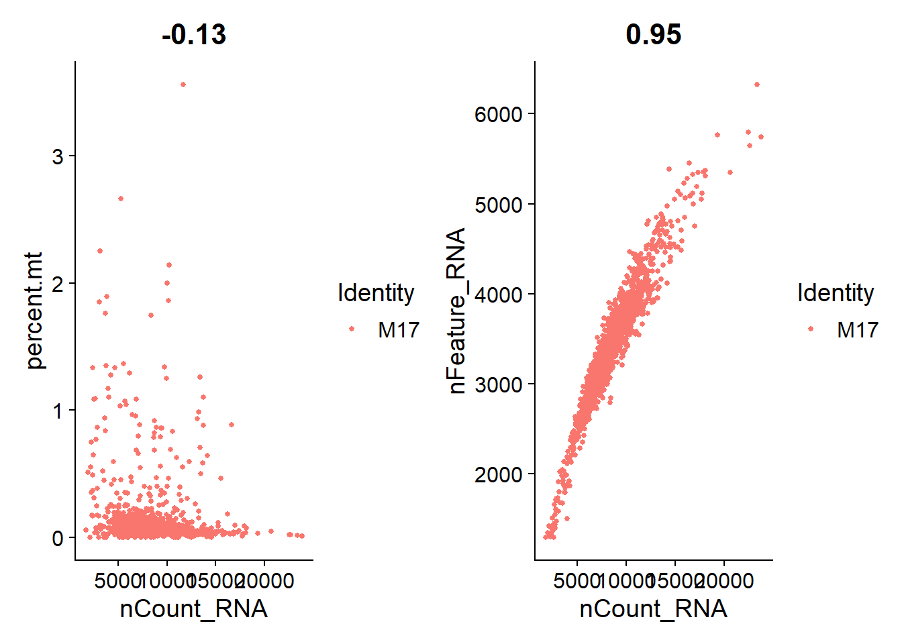

Last updated: 2022-04-17
Checks: 7 0
Knit directory: snRNAseq_muscle_MND/
This reproducible R Markdown analysis was created with workflowr (version 1.7.0). The Checks tab describes the reproducibility checks that were applied when the results were created. The Past versions tab lists the development history.
Great! Since the R Markdown file has been committed to the Git repository, you know the exact version of the code that produced these results.
Great job! The global environment was empty. Objects defined in the global environment can affect the analysis in your R Markdown file in unknown ways. For reproduciblity it’s best to always run the code in an empty environment.
The command set.seed(20220413) was run prior to running the code in the R Markdown file. Setting a seed ensures that any results that rely on randomness, e.g. subsampling or permutations, are reproducible.
Great job! Recording the operating system, R version, and package versions is critical for reproducibility.
Nice! There were no cached chunks for this analysis, so you can be confident that you successfully produced the results during this run.
Great job! Using relative paths to the files within your workflowr project makes it easier to run your code on other machines.
Great! You are using Git for version control. Tracking code development and connecting the code version to the results is critical for reproducibility.
The results in this page were generated with repository version 8d91133. See the Past versions tab to see a history of the changes made to the R Markdown and HTML files.
Note that you need to be careful to ensure that all relevant files for the analysis have been committed to Git prior to generating the results (you can use wflow_publish or wflow_git_commit). workflowr only checks the R Markdown file, but you know if there are other scripts or data files that it depends on. Below is the status of the Git repository when the results were generated:
Ignored files:
Ignored: .Rproj.user/
Untracked files:
Untracked: data/
Note that any generated files, e.g. HTML, png, CSS, etc., are not included in this status report because it is ok for generated content to have uncommitted changes.
These are the previous versions of the repository in which changes were made to the R Markdown (analysis/analysis.Rmd) and HTML (docs/analysis.html) files. If you’ve configured a remote Git repository (see ?wflow_git_remote), click on the hyperlinks in the table below to view the files as they were in that past version.
| File | Version | Author | Date | Message |
|---|---|---|---|---|
| Rmd | 8d91133 | Cadaei-Yuvxvs | 2022-04-17 | Updated Acknowledgments and web links. |
| html | 0d5d8c0 | Cadaei-Yuvxvs | 2022-04-15 | Build site. |
| Rmd | c10846b | Cadaei-Yuvxvs | 2022-04-15 | Initial commit of website and analysis |
library(Seurat)
library(SeuratDisk)
library(ggplot2)
library(DoubletFinder)
library(plotly)
library(MAST)
library(kableExtra)
library(dplyr)
library(gridExtra)
library(RColorBrewer)
library(SingleCellExperiment)
library(gam)
library(ensembldb)
library(AnnotationHub)
library(org.Hs.eg.db)
library(clustree)
library(tidygraph)
library(patchwork)
library(Homo.sapiens)
library(Organism.dplyr)
library(TxDb.Hsapiens.UCSC.hg19.knownGene)
library(TxDb.Hsapiens.UCSC.hg38.knownGene)
library(BSgenome.Hsapiens.UCSC.hg19)
library(biomaRt)
library(scales)
library(report)Background
Aims
The first step of the analysis is to load the raw 10X matrices into the R environment. The dimensions of these raw matrices are presented in Table 1.
# Load 10X
cell.lines <- list.dirs("data/counts",
recursive = F)
line.list <- lapply(cell.lines, Read10X)
raw.dim <- lapply(line.list, dim)
raw.dim <- do.call(cbind, raw.dim)
line.names <- c("C10", "C19", "M17", "M20")
colnames(raw.dim) <- line.names
rownames(raw.dim) <- c("Genes", "Droplets")
raw.dim %>%
kbl(caption = "Table 1. Raw matrix dimensions for each cell line") %>%
kable_material(c("striped", "hover"))| C10 | C19 | M17 | M20 | |
|---|---|---|---|---|
| Genes | 32838 | 32838 | 32838 | 32838 |
| Droplets | 6794880 | 6794880 | 6794880 | 6794880 |
The next step is to filter low-quality droplets.
To achieve this, the first thing is to remove all droplets with zero detected RNA:
# Remove droplets with 0 counts
empty.drops <- NULL
line.list <- lapply(line.list, function(line.matrix){
empty_droplets <- colSums(line.matrix) == 0
empty.drops <<- c(empty.drops, length(which(empty_droplets)))
line.matrix[,!empty_droplets]
})
# Number of droplets with 0 counts removed
# C10: 5971929
# C19: 5899209
# M17: 6139647
# M20: 5969238
# Remove genes with 0 counts
empty.gene.cnt <- NULL
line.list <- lapply(line.list, function(line.matrix){
empty_genes <- rowSums(line.matrix) == 0
empty.gene.cnt <<- c(empty.gene.cnt, length(which(empty_genes)))
line.matrix[!empty_genes,]
})
zero_cnts_rm_dim <- lapply(line.list, dim)
# [[1]]
# [1] 32838 822951
#
# [[2]]
# [1] 32838 895671
#
# [[3]]
# [1] 32838 655233
#
# [[4]]
# [1] 32838 825642
removed.genes.droplets <- rbind(empty.gene.cnt, empty.drops)
rownames(removed.genes.droplets) <- c("Empty genes", "Empty droplets")
colnames(removed.genes.droplets) <- line.names
removed.genes.droplets %>%
kbl(caption = "Table 2. Empty genes and droplets to be removed") %>%
kable_material(c("striped", "hover"))| C10 | C19 | M17 | M20 | |
|---|---|---|---|---|
| Empty genes | 6504 | 6753 | 7024 | 6692 |
| Empty droplets | 5971929 | 5899209 | 6139647 | 5969238 |
For single-nuclei analysis, it is common practice to filter droplets based on the percentage of genes expressed. Based on the violin plots shown below, I am going to go with a consistent threshold of 5%. This means that droplets with less than 5% of genes expressed will be removed. In addition, I will filter droplets with more than 5% of reads mapped to mitochondrial genes.
lines.seu <- mapply(function(line.matrix, line.path) {
CreateSeuratObject(counts=line.matrix,
project=substr(line.path,nchar(line.path)-2, nchar(line.path)))
},
line.matrix = line.list,
line.path = cell.lines)
lines.seu <- lapply(lines.seu, function(seu){
seu[["percent.mt"]] <- PercentageFeatureSet(seu, pattern = "^MT-")
seu[["percent.features"]] <- seu[["nFeature_RNA"]] / nrow(seu) * 100
return(seu)
})print(VlnPlot(lines.seu[[1]], features = c("percent.features", "percent.mt"), ncol = 2))print(VlnPlot(lines.seu[[2]], features = c("percent.features", "percent.mt"), ncol = 2))print(VlnPlot(lines.seu[[3]], features = c("percent.features", "percent.mt"), ncol = 2))print(VlnPlot(lines.seu[[4]], features = c("percent.features", "percent.mt"), ncol = 2))# Filter droplets percent.mt < 5 and percent.features > 5
lines.seu.red <- lapply(lines.seu, function(seu){
subset(seu, subset = percent.mt < 5 & percent.features > 5)
})
threshold.rm.cnts <- sapply(lines.seu, ncol) - sapply(lines.seu.red, ncol)
reduced.dims <- lapply(lines.seu.red, dim)
reduced.dims <- do.call(cbind, reduced.dims)
threshold.tbl.summary <- rbind(threshold.rm.cnts, reduced.dims)
colnames(threshold.tbl.summary) <- line.names
rownames(threshold.tbl.summary) <- c("Droplets removed", "Genes", "Droplets")
threshold.tbl.summary %>%
kbl(caption = "Table 3. Summary of droplets removed from thresholding and thresholded matrix dimensions") %>%
kable_material(c("striped", "hover")) %>%
pack_rows("Thresholded matrix dimensions", 2,3)| C10 | C19 | M17 | M20 | |
|---|---|---|---|---|
| Droplets removed | 818852 | 889704 | 653391 | 822146 |
| Thresholded matrix dimensions | ||||
| Genes | 26334 | 26085 | 25814 | 26146 |
| Droplets | 4099 | 5967 | 1842 | 3496 |
Before continuing, I’m going to run some standard pre-processing using Seurat:
#Seurat preprocess
lines.seu.red <- lapply(lines.seu.red, function(seu){
seu <- NormalizeData(seu)
seu <- FindVariableFeatures(seu)
seu <- ScaleData(seu)
seu <- RunPCA(seu)
seu <- RunUMAP(seu, dims = 1:20, min.dist=0.08, n.neighbors=45, reduction="pca",
n.components = 2L)
return(seu)
})Doublets are droplets that contain the RNA contents of two nuclei. I’m using the DoubletFinder package to identify these doublets. Identified doublets and singlets are labelled in the UMAPs below.
# Find doublets
lines.seu.red <- lapply(lines.seu.red, function(seu){
nExp <- round(0.15*nrow(seu@meta.data))
seu <- doubletFinder_v3(seu, PCs = 1:10, pN = 0.25, pK = 0.01, nExp = nExp, reuse.pANN = FALSE, sct=FALSE)
return(seu)
})
doublets.rm <- NULL
plot_doublets <- function(seu){
doublet.name <- colnames(seu@meta.data)[grep("DF*", colnames(seu@meta.data))]
print(DimPlot(seu, reduction = "umap", label = F, pt.size = 0.25,
group.by = doublet.name) +
ggtitle(seu@project.name) +
ylab("UMAP 2") + xlab("UMAP 1") +
theme(text = element_text(size = 18),
axis.text = element_text(size = 18)))
length(which(seu[[doublet.name]]=="Doublet"))
}doublets.rm <- c(doublets.rm, plot_doublets(lines.seu.red[[1]]))doublets.rm <- c(doublets.rm, plot_doublets(lines.seu.red[[2]]))doublets.rm <- c(doublets.rm, plot_doublets(lines.seu.red[[3]]))doublets.rm <- c(doublets.rm, plot_doublets(lines.seu.red[[4]]))# Keep singlets
lines.seu.red <- lapply(lines.seu.red, function(seu){
doublet.name <- colnames(seu@meta.data)[grep("DF*", colnames(seu@meta.data))]
seu[,seu[[doublet.name]] == "Singlet"]
})Overall the number of doublets removed are:
I’m plotting scatterplots for each cell line to check if the remaining nuclei are what we expect.
Overall, we see a positive association between total RNA counts and genes expressed; and nuclei with higher percentages of mitochondrial genes end to have lower counts of RNA. This is expected.
plot_qa <- function(seu){
plot1 <- FeatureScatter(seu, feature1 = "nCount_RNA", feature2 = "percent.mt")
plot2 <- FeatureScatter(seu, feature1 = "nCount_RNA", feature2 = "nFeature_RNA")
print(plot1 + plot2)
}
plot_qa(lines.seu.red[[1]])plot_qa(lines.seu.red[[2]])plot_qa(lines.seu.red[[3]])
plot_qa(lines.seu.red[[4]])I’m using Seurat’s standard integration pipeline to integrate all four lines together.
# Integration
features <- SelectIntegrationFeatures(object.list = lines.seu.red)
line.anchors <- FindIntegrationAnchors(object.list = lines.seu.red, anchor.features = features)
lines.combined <- IntegrateData(anchorset = line.anchors)run.vis.fun <- function(seu) {
seu <- ScaleData(seu, verbose = F, features = features)
seu <- RunPCA(seu, verbose = F, features = features)
seu <-
RunUMAP(
seu,
dims = 1:20,
min.dist = 0.08,
n.neighbors = 45,
reduction = "pca",
n.components = 2L,
verbose = F
)
seu <- FindNeighbors(seu, dims=1:20, verbose=F)
seu <- FindClusters(seu, resolution=seq(0.1,0.8,0.1), verbose=F)
}
DefaultAssay(lines.combined) <- "integrated"
lines.combined <- run.vis.fun(lines.combined)
optimal_res <- NULL
run_clustree <- function(seu){
print(clustree(seu, prefix="integrated_snn_res."))
clustree.stability <- clustree(seu, return="graph") %>%
activate(nodes) %>%
as.data.frame() %>%
group_by(integrated_snn_res.) %>%
summarise(average_stability = mean(sc3_stability))
optimal_res <<- clustree.stability$integrated_snn_res.[clustree.stability$average_stability==max(clustree.stability$average_stability)][1]
return(clustree.stability)
}
clustree.out <- run_clustree(lines.combined)The optimal resolution is 0.2.
colnames(clustree.out) <- c("Resolution", "Average_stability")
clustree.out %>%
kbl(caption = "Clustering stability") %>% kable_paper(full_width=F) %>%
column_spec(2, color = "white",
background = spec_color(clustree.out$Average_stability, end = 0.7))| Resolution | Average_stability |
|---|---|
| 0.1 | 0.4289707 |
| 0.2 | 0.4791785 |
| 0.3 | 0.3603427 |
| 0.4 | 0.2834511 |
| 0.5 | 0.3354303 |
| 0.6 | 0.3742372 |
| 0.7 | 0.3316249 |
| 0.8 | 0.2252198 |
These plots illustrate the structure of nuclei expression in two dimensional space. The dimensional reduction method is UMAP.
#DimPlot(lines.combined, reduction="pca", group.by = "orig.ident")
(line.umap <- DimPlot(
lines.combined,
reduction = "umap",
label = F,
label.size = 6,
pt.size = 0.25,
group.by = "orig.ident"
) +
ggtitle(element_blank()) +
ylab("UMAP 2") + xlab("UMAP 1") +
theme(text = element_text(size = 18),
axis.text = element_text(size = 18)))We used the single cell muscle atlas generated by De Micheli et al. to annotate our dataset.
See Gene Expression Omnibus: GSE143704
lines.combined <-
AddMetaData(lines.combined,
sapply(lines.combined$orig.ident, function(x) {
ifelse(substr(x, 1, 1) == "C", "Control", "MND")
}),
"case_control")
demicheli.seu <- LoadH5Seurat("data/demicheli_seurat.h5Seurat")
demicheli.anchors <-
FindTransferAnchors(
reference = demicheli.seu,
query = lines.combined,
dims = 1:35,
reference.reduction = "pca"
)
predictions <-
TransferData(
anchorset = demicheli.anchors,
refdata = demicheli.seu$cell_annotation,
dims = 1:35
)
lines.combined <- AddMetaData(lines.combined, metadata = predictions)
lines.combined$predicted.id <- factor(sapply(lines.combined$predicted.id, function(x){
ifelse(grepl("muscle", x), "Mature skeletal muscle", "Fibroblasts")}), levels=c("Mature skeletal muscle", "Fibroblasts"))
combined.muscle <- subset(lines.combined, cells=grep("Mature skeletal muscle", lines.combined$predicted.id))
integrated_case_control <- DimPlot(lines.combined, reduction = "umap", group.by="case_control", cols = DiscretePalette(2, palette = "alphabet"), pt.size = 0.01) +
xlab("UMAP 1") + ylab("UMAP 2") + ggtitle(element_blank()) +
theme(legend.position="bottom", legend.direction = "vertical",
plot.tag=element_text(face="plain", size=18)) +
labs(tag="A")
integrated_pred_umap <- DimPlot(lines.combined, reduction = "umap", group.by="predicted.id", pt.size = 0.01) +
xlab("UMAP 1") + ylab("UMAP 2") + ggtitle(element_blank()) +
theme(legend.position="bottom", legend.direction = "vertical",
plot.tag=element_text(face="plain", size=18)) +
labs(tag="B")
(fig9.ab <- integrated_case_control + integrated_pred_umap + plot_layout(guides = "collect"))# DE
DefaultAssay(combined.muscle) <- "RNA"
Idents(combined.muscle) <- "case_control"
case.control.de <-
FindMarkers(
combined.muscle,
ident.1 = "MND",
ident.2 = "Control",
test.use = "MAST",
min.pct = 0.01,
logfc.threshold = 0.05,
verbose = F
)
ah <- AnnotationHub()
ahDb <- query(ah, pattern = c("Ensembl 103 EnsDb for Homo sapiens"))
ahEdb <- ahDb[[1]]
get_description <- function(up.table) {
all.genes <- unique(unlist(up.table$gene))
genes.split <-
split(all.genes, ceiling(seq_along(all.genes) / 50))
bm.tbl <- NULL
for (i in 1:length(genes.split)) {
bm.out <-
biomaRt::select(
ahEdb,
keys = genes.split[[i]],
columns = c("SYMBOL", "DESCRIPTION"),
keytype = "SYMBOL"
)
bm.tbl <- rbind(bm.tbl, bm.out)
}
up.table[["description"]] <-
bm.tbl$DESCRIPTION[match(up.table$gene, bm.tbl$SYMBOL)]
return(up.table)
}Our analysis reveals that there are no overt differences in expression between MND and control muscle nuclei, including the Agrin-MuSK signalling pathway.
Figures shown here are outputs straight from the code below. For our paper, we further modified the formatting and text in PowerPoint for aesthetic purposes.
agrin.musk.transcripts <- c("MUSK", "CHRNA1", "DES", "LRP4", "DOK7", "CAV3", "RAPSN")
Idents(lines.combined) <- "orig.ident"
integrated.dotplot <- DotPlot(
lines.combined,
assay = "RNA",
dot.min = 0.01,
features = agrin.musk.transcripts,
split.by = "predicted.id",
cols = c("blue", "blue")
) +
coord_flip() +
xlab(element_blank()) + ylab("Predicted Cell Type") +
labs(tag = "C") +
theme(
axis.text.x = element_text(
angle = 90,
hjust = 1,
vjust=0.35,
colour = c("#F8766D", "#00BFC4")
),
axis.text.y = element_text(face = "italic"),
plot.title = element_text(face = "plain", hjust = 0),
legend.position = "right",
plot.tag = element_text(face="plain", size=18)
)
integrated_case_control <- integrated_case_control + labs(tag = "A") + theme(plot.tag = element_text(face="plain", size=18))
integrated_pred_umap <- integrated_pred_umap + labs(tag="B") + theme(plot.tag = element_text(face="plain", size=18))
fig9.ab <- integrated_case_control + integrated_pred_umap + plot_layout(guides = "collect")
fig9.abc <- fig9.ab / integrated.dotplot
# fig_nine_dml <- rvg::dml(ggobj = fig9.abc)
# officer::read_pptx() %>%
# officer::add_slide() %>%
# officer::ph_with(fig_nine_dml, ph_location(width=7.2835, height = 5)) %>%
# base::print(
# target =
# "C:/Users/s4353395/Documents/snrnaseq_mnd/scripts/fig9.pptx"
# )
fig9.abc Figure 9. Transcriptomic analysis of muscle cell culture nuclei derived from human muscle stem cells identifies fibroblastic and muscle cell types with no apparent bias across MND status.
(A) Whole-transcriptome expression profile patterns for individual nuclei derived from control (Con-13, Con-16) and MND donor (MND-16, MND-9) lines. Distinct expression profile patterns have been reduced to two-dimensions in this Uniform Manifold Approximation and Projection (UMAP) plot. Each point shows results for a single nucleus. MND and non-MND nuclei (pink and blue) are co-clustered in the UMAP, indicating similar patterns of whole-transcriptome expression between MND and controls. (B) Nuclei annotated for cell-type, identifying two distinct populations: mature skeletal muscle and fibroblasts. (C) Transcript dot plot comparing levels of expression for some key components of the n-agrin-MuSK signaling cascade in two MND samples versus two non-MND samples (see supplementary Figure S5 for full data set). All four samples show transcripts consistent with their expression in muscle cells. Expression of n-agrin-MuSK signaling transcripts appeared comparable between MND and control. Further, all samples do have nuclei that express transcripts associated with maturing muscle skeletal muscle.
dotplot.symbols <- c(
"TTN",
"RYR1",
"MYOG",
"HDAC4",
"MEF2A",
"ACTA1",
"TNNT3",
"TNNI1",
"DMD",
"MYH3",
"DES",
"MUSK",
"DOK7",
"CAV3",
"LRP4",
"RAPSN",
"CHRNA1",
"NCAM1",
"RUNX1",
"APOE",
"POSTN",
"FBN1",
"MFAP5",
"FN1",
"COL4A1",
"COL3A1",
"COL1A1"
)
simpleCap <- function(x) {
s <- strsplit(x, " ")[[1]]
paste(toupper(substring(s, 1,1)), substring(s, 2),
sep="", collapse=" ")
}
dotplot.proteins <- get_description(data.frame(gene = dotplot.symbols))
dotplot.proteins$protein <- sapply(dotplot.proteins$description, function(x){
x <- strsplit(x, " [", fixed=T)[[1]][[1]]
x <- strsplit(x, ",")[[1]][[1]]
simpleCap(x)
})
dotplot.proteins$val <- 1
dotplot.proteins$protein <- factor(dotplot.proteins$protein, levels=dotplot.proteins$protein)
protein.plot <- ggplot(data = dotplot.proteins, aes(x=protein, y=val)) +
geom_bar(stat="identity", color = "transparent", fill="transparent") +
labs(x=element_blank(), y=element_blank()) +
theme_classic() +
theme(
plot.background = element_rect(fill = "transparent", color = "transparent"),
axis.text.y = element_text(size = 12, color = c(
rep("#F8766D", 19),
rep("#00BFC4", 8)
)),
axis.text.x = element_blank(),
axis.line = element_blank(),
axis.ticks = element_blank(),
legend.position = "none"
) +
coord_flip()
suppl.dotplot <- DotPlot(
lines.combined,
assay = "RNA",
dot.min = 0.01,
features = dotplot.symbols,
split.by = "predicted.id",
cols = c("blue", "blue")
) +
coord_flip() +
xlab(element_blank()) + ylab("Predicted Cell Type") +
theme(
axis.text.x = element_text(
angle = 90,
hjust = 1,
vjust=0.35,
colour = c("#F8766D", "#00BFC4")
),
axis.text.y = element_text(face = "italic",
colour = c(
rep("#F8766D", 19),
rep("#00BFC4", 8)
)),
plot.title = element_text(face = "plain", hjust = 0),
legend.position = "right"
)
suppl.fig <- protein.plot + suppl.dotplot + plot_layout(widths=c(0.1,1))
# suppl_dml <- rvg::dml(ggobj = suppl.fig)
# officer::read_pptx() %>%
# officer::add_slide() %>%
# officer::ph_with(suppl_dml, ph_location(width=11, height = 8)) %>%
# base::print(
# target =
# "C:/Users/s4353395/Documents/snrnaseq_mnd/scripts/S5_1.pptx"
# )
suppl.figSupplementary Figure S5. Dot-plot of selected marker genes from nuclei isolated from non-MND and MND muscle cultures.
Each nuclei isolated from Con-13, Con-16, MND-16, and MND-9 cultures have been automatically catalogued into 2 cell types, based on the single-cell transcriptomic atlas of human skeletal muscle by De Micheli et al, which were manually annotated based on their relative expression of key marker genes (41); i) ‘Fibroblasts’ expressing higher levels of COL1A1; ii) ‘Mature skeletal muscle’ cells (i.e. multinucleated myotubes) whose nuclei consistently displayed a collection of muscle specific genes such as DES, TTN, DMD, and MYH3, as well as genes whose proteins drive the clustering of acetylcholine receptors (AChRs), such as MuSK, LRP4, Dok7, Rapsyn and including AChR subunits (e.g. CHRNA1), and finally known muscle genes RUNXI1 and NCAM1 that are expressed in muscle devoid of motor nerve innervation.
Analyses were conducted using the R Statistical language (version 4.1.0; R Core Team, 2021) on Windows 10 x64 (build 19042), using the packages SingleCellExperiment (version 1.14.1; Amezquita R et al., 2020), MAST (version 1.18.0; Andrew McDavid, Greg Finak and Masanao Yajima, 2021), gridExtra (version 2.3; Baptiste Auguie, 2017), Homo.sapiens (version 1.3.1; Bioconductor Core Team, 2015), TxDb.Hsapiens.UCSC.hg38.knownGene (version 3.13.0; Bioconductor Core Team and Bioconductor Package Maintainer, 2021), workflowr (version 1.7.0; Blischak JD et al., https://doi.org/10.12688/f1000research.20843.1), plotly (version 4.9.3; Sievert. Interactive Web-Based Data Visualization with R, plotly, and shiny. Chapman and Hall/CRC Florida, 2020.), MatrixGenerics (version 1.4.0; Constantin Ahlmann-Eltze, Peter Hickey and Hervé Pagès, 2021), fields (version 12.3; Douglas Nychka et al., 2017), RColorBrewer (version 1.1.2; Erich Neuwirth, 2014), dotCall64 (version 1.0.1; Gerber et al., 2018), S4Vectors (version 0.30.0; Pagès, Lawrence and Aboyoun, 2021), Biostrings (version 2.60.0; Pagès et al., 2021), ggplot2 (version 3.3.3; Wickham. ggplot2: Elegant Graphics for Data Analysis. Springer-Verlag New York, 2016.), scales (version 1.1.1; Hadley Wickham and Dana Seidel, 2020), dbplyr (version 2.1.1; Hadley Wickham, Maximilian Girlich and Edgar Ruiz, 2021), dplyr (version 1.0.6; Hadley Wickham et al., 2021), Seurat (version 4.0.2.9003; Hao and Hao et al. Integrated analysis of multimodal single-cell data. bioRxiv, 2020), kableExtra (version 1.3.4; Hao Zhu, 2021), matrixStats (version 0.58.0; Henrik Bengtsson, 2021), BSgenome (version 1.60.0; Hervé Pagès, 2021), XVector (version 0.32.0; Hervé Pagès and Patrick Aboyoun, 2021), AnnotationDbi (version 1.54.0; Hervé Pagès et al., 2021), GenomicFeatures (version 1.44.0; Lawrence M et al., 2013), GenomicRanges (version 1.44.0; Lawrence M et al., 2013), IRanges (version 2.26.0; Lawrence M et al., 2013), BiocFileCache (version 2.0.0; Lori Shepherd and Martin Morgan, 2021), rtracklayer (version 1.52.0; Lawrence, Gentleman, Carey: “rtracklayer: an {R} package for interfacing with genome browsers”. Bioinformatics 25:1841-1842.), report (version 0.3.0; Makowski et al., 2020), biomaRt (version 2.48.0; Mapping identifiers for the integration of genomic datasets with the R/Bioconductor package biomaRt. Steffen Durinck et al., 2009), GO.db (version 3.13.0; Marc Carlson, 2021), org.Hs.eg.db (version 3.13.0; Marc Carlson, 2021), TxDb.Hsapiens.UCSC.hg19.knownGene (version 3.2.2; Marc Carlson and Bioconductor Package Maintainer, 2015), OrganismDbi (version 1.34.0; Marc Carlson et al., 2021), AnnotationFilter (version 1.16.0; Martin Morgan and Johannes Rainer, 2021), AnnotationHub (version 3.0.0; Martin Morgan and Lori Shepherd, 2021), Organism.dplyr (version 1.20.0; Martin Morgan and Yubo Cheng, 2021), SummarizedExperiment (version 1.22.0; Martin Morgan et al., 2021), KernSmooth (version 2.23.20; Matt Wand, 2021), foreach (version 1.5.1; Microsoft and Steve Weston, 2020), Biobase (version 2.52.0; Orchestrating high-throughput genomic analysis with Bioconductor. Huber, V.Carey, Gentleman, …, Morgan Nature Methods, 2015:12, 115.), BiocGenerics (version 0.38.0; Orchestrating high-throughput genomic analysis with Bioconductor. Huber, V.Carey, Gentleman, …, Morgan Nature Methods, 2015:12, 115.), SeuratDisk (version 0.0.0.9019; Paul Hoffman, 2021), DoubletFinder (version 2.0.3; person), SeuratObject (version 4.0.1; Rahul Satija et al., 2021), ensembldb (version 2.16.0; Rainer J et al., 2019), spam (version 2.6.0; Reinhard Furrer, Stephan Sain, 2010), viridisLite (version 0.4.0; Simon Garnier et al., 2021), viridis (version 0.6.1; Simon Garnier et al., 2021), GenomeInfoDb (version 1.28.0; Sonali Arora et al., 2021), BSgenome.Hsapiens.UCSC.hg19 (version 1.4.3; The Bioconductor Dev Team, 2020), patchwork (version 1.1.1; Thomas Lin Pedersen, 2020), tidygraph (version 1.2.0; Thomas Lin Pedersen, 2020), ggraph (version 2.0.5; Thomas Lin Pedersen, 2021), gam (version 1.20; Trevor Hastie, 2020) and clustree (version 0.4.3; Zappia L, Oshlack Clustering trees: a visualization for evaluating clusterings at multiple resolutions. Gigascience. 2018;7. DOI:gigascience/giy083).
sessionInfo()R version 4.1.0 (2021-05-18)
Platform: x86_64-w64-mingw32/x64 (64-bit)
Running under: Windows 10 x64 (build 19042)
Matrix products: default
locale:
[1] LC_COLLATE=English_Australia.1252 LC_CTYPE=English_Australia.1252
[3] LC_MONETARY=English_Australia.1252 LC_NUMERIC=C
[5] LC_TIME=English_Australia.1252
attached base packages:
[1] grid splines parallel stats4 stats graphics grDevices
[8] utils datasets methods base
other attached packages:
[1] KernSmooth_2.23-20
[2] fields_12.3
[3] viridis_0.6.1
[4] viridisLite_0.4.0
[5] spam_2.6-0
[6] dotCall64_1.0-1
[7] report_0.3.0
[8] scales_1.1.1
[9] biomaRt_2.48.0
[10] BSgenome.Hsapiens.UCSC.hg19_1.4.3
[11] BSgenome_1.60.0
[12] rtracklayer_1.52.0
[13] Biostrings_2.60.0
[14] XVector_0.32.0
[15] TxDb.Hsapiens.UCSC.hg38.knownGene_3.13.0
[16] Organism.dplyr_1.20.0
[17] Homo.sapiens_1.3.1
[18] TxDb.Hsapiens.UCSC.hg19.knownGene_3.2.2
[19] GO.db_3.13.0
[20] OrganismDbi_1.34.0
[21] patchwork_1.1.1
[22] tidygraph_1.2.0
[23] clustree_0.4.3
[24] ggraph_2.0.5
[25] org.Hs.eg.db_3.13.0
[26] AnnotationHub_3.0.0
[27] BiocFileCache_2.0.0
[28] dbplyr_2.1.1
[29] ensembldb_2.16.0
[30] AnnotationFilter_1.16.0
[31] GenomicFeatures_1.44.0
[32] AnnotationDbi_1.54.0
[33] gam_1.20
[34] foreach_1.5.1
[35] RColorBrewer_1.1-2
[36] gridExtra_2.3
[37] dplyr_1.0.6
[38] kableExtra_1.3.4
[39] MAST_1.18.0
[40] SingleCellExperiment_1.14.1
[41] SummarizedExperiment_1.22.0
[42] Biobase_2.52.0
[43] GenomicRanges_1.44.0
[44] GenomeInfoDb_1.28.0
[45] IRanges_2.26.0
[46] S4Vectors_0.30.0
[47] BiocGenerics_0.38.0
[48] MatrixGenerics_1.4.0
[49] matrixStats_0.58.0
[50] plotly_4.9.3
[51] DoubletFinder_2.0.3
[52] ggplot2_3.3.3
[53] SeuratDisk_0.0.0.9019
[54] SeuratObject_4.0.1
[55] Seurat_4.0.2.9003
[56] workflowr_1.7.0
loaded via a namespace (and not attached):
[1] estimability_1.3 rappdirs_0.3.3
[3] scattermore_0.7 coda_0.19-4
[5] tidyr_1.1.3 bit64_4.0.5
[7] knitr_1.33 multcomp_1.4-17
[9] irlba_2.3.3 DelayedArray_0.18.0
[11] data.table_1.14.0 rpart_4.1-15
[13] KEGGREST_1.32.0 RCurl_1.98-1.3
[15] generics_0.1.0 TH.data_1.0-10
[17] callr_3.7.0 cowplot_1.1.1
[19] RSQLite_2.2.7 RANN_2.6.1
[21] future_1.21.0 bit_4.0.4
[23] spatstat.data_2.1-0 webshot_0.5.2
[25] xml2_1.3.2 httpuv_1.6.1
[27] assertthat_0.2.1 xfun_0.23
[29] hms_1.1.0 jquerylib_0.1.4
[31] evaluate_0.14 promises_1.2.0.1
[33] fansi_0.4.2 restfulr_0.0.13
[35] progress_1.2.2 igraph_1.2.6
[37] DBI_1.1.1 htmlwidgets_1.5.3
[39] spatstat.geom_2.1-0 purrr_0.3.4
[41] ellipsis_0.3.2 RSpectra_0.16-0
[43] backports_1.2.1 insight_0.14.1
[45] deldir_0.2-10 vctrs_0.3.8
[47] ROCR_1.0-11 abind_1.4-5
[49] cachem_1.0.5 withr_2.4.2
[51] ggforce_0.3.3 checkmate_2.0.0
[53] emmeans_1.6.1 sctransform_0.3.2
[55] GenomicAlignments_1.28.0 prettyunits_1.1.1
[57] goftest_1.2-2 svglite_2.0.0
[59] cluster_2.1.2 lazyeval_0.2.2
[61] crayon_1.4.1 hdf5r_1.3.5
[63] labeling_0.4.2 pkgconfig_2.0.3
[65] tweenr_1.0.2 nlme_3.1-152
[67] ProtGenerics_1.24.0 rlang_0.4.11
[69] globals_0.14.0 lifecycle_1.0.0
[71] miniUI_0.1.1.1 sandwich_3.0-1
[73] filelock_1.0.2 rprojroot_2.0.2
[75] polyclip_1.10-0 lmtest_0.9-38
[77] graph_1.70.0 Matrix_1.3-3
[79] zoo_1.8-9 whisker_0.4
[81] ggridges_0.5.3 processx_3.5.2
[83] png_0.1-7 rjson_0.2.20
[85] parameters_0.14.0 bitops_1.0-7
[87] getPass_0.2-2 blob_1.2.1
[89] stringr_1.4.0 parallelly_1.25.0
[91] memoise_2.0.0 magrittr_2.0.1
[93] plyr_1.8.6 ica_1.0-2
[95] zlibbioc_1.38.0 compiler_4.1.0
[97] BiocIO_1.2.0 fitdistrplus_1.1-5
[99] Rsamtools_2.8.0 cli_3.0.0
[101] listenv_0.8.0 pbapply_1.4-3
[103] ps_1.6.0 MASS_7.3-54
[105] mgcv_1.8-35 tidyselect_1.1.1
[107] stringi_1.6.1 highr_0.9
[109] yaml_2.2.1 ggrepel_0.9.1
[111] sass_0.4.0 tools_4.1.0
[113] future.apply_1.7.0 rstudioapi_0.13
[115] git2r_0.30.1 farver_2.1.0
[117] Rtsne_0.15 digest_0.6.27
[119] BiocManager_1.30.15 shiny_1.6.0
[121] Rcpp_1.0.7 BiocVersion_3.13.1
[123] later_1.2.0 RcppAnnoy_0.0.18
[125] httr_1.4.2 effectsize_0.4.5
[127] colorspace_2.0-1 rvest_1.0.1
[129] XML_3.99-0.6 fs_1.5.0
[131] tensor_1.5 reticulate_1.20
[133] uwot_0.1.10 RBGL_1.68.0
[135] spatstat.utils_2.1-0 graphlayouts_0.7.1
[137] systemfonts_1.0.2 xtable_1.8-4
[139] jsonlite_1.7.2 R6_2.5.0
[141] pillar_1.6.2 htmltools_0.5.1.1
[143] mime_0.10 glue_1.4.2
[145] fastmap_1.1.0 BiocParallel_1.26.0
[147] interactiveDisplayBase_1.30.0 codetools_0.2-18
[149] maps_3.3.0 mvtnorm_1.1-1
[151] utf8_1.2.1 lattice_0.20-44
[153] bslib_0.2.5.1 spatstat.sparse_2.0-0
[155] tibble_3.1.2 curl_4.3.1
[157] leiden_0.3.8 survival_3.2-11
[159] rmarkdown_2.8 munsell_0.5.0
[161] GenomeInfoDbData_1.2.6 iterators_1.0.13
[163] reshape2_1.4.4 gtable_0.3.0
[165] bayestestR_0.10.0 spatstat.core_2.1-2